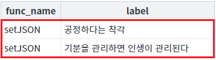
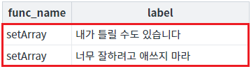
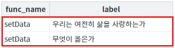
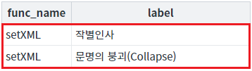

DataList에 전체 데이터를 설정하는 함수 예시입니다. 설정할 수 있는 데이터 유형은 4가지이며, 각 유형에 맞는 함수는 다음과 같습니다.
JSON 형식 : setJSON
1차원 Array 형식 + 컬럼 정보 : setArray
1차원 Array 형식 : setData
XML 형식 : setXML
대량 데이터를 할당하는 경우 함수 setData 또는 setArray를 사용하는 것이 속도 개선에 도움이 됩니다.
전체 데이터를 JSON 형식으로 설정하기
컬럼 정보와 함께 전체 데이터를 1차원 Array 형식으로 설정하기
전체 데이터를 1차원 Array 형식으로 설정하기
전체 데이터를 XML 형식으로 설정하기
STEP 1. 버튼 전체 데이터 설정하기 - JSON 형식을 클릭합니다.
STEP 2. 실행 결과를 확인합니다.
DataList에 데이터가 할당되고 DataList와 연결된 GridView에 데이터가 출력됩니다. 버튼 하단에 구성된 GridView를 확인합니다.
그림 1.브라우저(Chrome) 실행 예시

영역 [로그 확인]에 출력된 로그를 통해 설정된 데이터의 형식을 확인할 수 있습니다.다.
(브라우저의 개발자 도구 콘솔에도 로그가 출력되며, 설정된 객체를 확인할 수 있습니다.)로그
[19:14:12] # 전체 데이터 설정하기 - JSON 형식 | 함수 setJSON 실행
데이터 예시
[19:14:12] [{"func_name":"setJSON","label":"공정하다는 착각"},{"func_name":"setJSON","label":"기분을 관리하면 인생이 관리된다"}]STEP 1. 버튼 전체 데이터 설정하기 - 1차원 Array 형식 + 컬럼 정보을 클릭합니다.
STEP 2. 실행 결과를 확인합니다.
DataList에 데이터가 할당되고 DataList와 연결된 GridView에 데이터가 출력됩니다. 버튼 하단에 구성된 GridView를 확인합니다.
그림 2.브라우저(Chrome) 실행 예시

영역 [로그 확인]에 출력된 로그를 통해 설정된 데이터의 형식을 확인할 수 있습니다.다.
(브라우저의 개발자 도구 콘솔에도 로그가 출력되며, 설정된 객체를 확인할 수 있습니다.)로그
[19:15:55] # 전체 데이터 설정하기 - 1차원 Array 형식 + 컬럼 정보 | 함수 setArray 실행
데이터 예시
[19:15:55] {"columnInfo":["func_name","label"],"data":["setArray","내가 틀릴 수도 있습니다","setArray","너무 잘하려고 애쓰지 마라"]}STEP 1. 버튼 전체 데이터 설정하기 - 1차원 Array 형식을 클릭합니다.
STEP 2. 실행 결과를 확인합니다.
DataList에 데이터가 할당되고 DataList와 연결된 GridView에 데이터가 출력됩니다. 버튼 하단에 구성된 GridView를 확인합니다.
그림 3.브라우저(Chrome) 실행 예시

영역 [로그 확인]에 출력된 로그를 통해 설정된 데이터의 형식을 확인할 수 있습니다.다.
(브라우저의 개발자 도구 콘솔에도 로그가 출력되며, 설정된 객체를 확인할 수 있습니다.)로그
[19:17:07] # 전체 데이터 설정하기 - 1차원 Array 형식 | 함수 setData 실행 데이터 예시 [19:17:07] ["setData","우리는 여전히 삶을 사랑하는가","setData","무엇이 옳은가"]
STEP 1. 버튼 전체 데이터 설정하기 - XML 형식을 클릭합니다.
STEP 2. 실행 결과를 확인합니다.
DataList에 데이터가 할당되고 DataList와 연결된 GridView에 데이터가 출력됩니다. 버튼 하단에 구성된 GridView를 확인합니다.
그림 4.브라우저(Chrome) 실행 예시

영역 [로그 확인]에 출력된 로그를 통해 설정된 데이터의 형식을 확인할 수 있습니다.다.
(브라우저의 개발자 도구 콘솔에도 로그가 출력되며, 설정된 객체를 확인할 수 있습니다.)로그
[19:18:29] # 전체 데이터 설정하기 - XML 형식 | 함수 setXML 실행 데이터 예시 [19:18:29] <list><map><func_name>setXML</func_name><label>작별인사</label></map><map><func_name>setXML</func_name><label>문명의 붕괴(Collapse)</label></map></list>
원하는 시점에 컴포넌트의 함수 'setJSON'를 이용하여 스크립트를 작성합니다. 첫 번째 인자에 설정할 데이터를 JSON 형식으로 전달합니다.
스크립트
// 예제 파일에서는 스크립트 scwin.btn_exam1_1_onclick에 작성되어 있습니다. // DataList 'dlt_books_1'의 전체 데이터를 JSON 형식으로 설정합니다. let data = [ { "func_name": "setJSON", "label": "공정하다는 착각" }, { "func_name": "setJSON", "label": "기분을 관리하면 인생이 관리된다" } ]; dlt_books_1.setJSON(data);
원하는 시점에 컴포넌트의 함수 'setArray'를 이용하여 스크립트를 작성합니다. 첫 번째 인자에 설정할 데이터를 JSON 형식으로 전달합니다.
데이터 구조
// "columnInfo"에 정의된 컬럼의 순서에 맞춰 "data"에 데이터를 1차원 배열로 구성합니다. { "columnInfo": ["column_1", "column_2"], // DataList의 컬럼 ID가 담긴 1차원 배열로 설정할 컬럼 ID를 작성. "data": ["column_1 row_1", "column_2 row_1", "column_1 row_2", "column_2 row_2"] // 'columnInfo'에 정의한 컬럼의 순서대로 구성된 1차원 배열 데이터. }
스크립트
// 예제 파일에서는 스크립트 scwin.btn_exam1_2_onclick에 작성되어 있습니다. // DataList 'dlt_books_1'의 전체 데이터를 '1차원 Array 형식 + 컬럼 정보'으로 설정합니다. // DataList의 컬럼 "func_name"와 "label"에 데이터를 설정합니다. let data = { "columnInfo": ["func_name", "label"], "data": ["setArray", "내가 틀릴 수도 있습니다", "setArray", "너무 잘하려고 애쓰지 마라"] }; dlt_books_1.setArray(data);
원하는 시점에 컴포넌트의 함수 'setData'를 이용하여 스크립트를 작성합니다. 첫 번째 인자에 설정할 데이터를 1차원 Array 형식으로 전달합니다. 데이터의 순서는 DataList에 정의된 컬럼의 순서와 일치해야 합니다.
스크립트
// 예제 파일에서는 스크립트 scwin.btn_exam1_3_onclick에 작성되어 있습니다. // DataList 'dlt_books_1'의 전체 데이터를 '1차원 Array 형식'으로 설정합니다. let data = ["setData", "우리는 여전히 삶을 사랑하는가", "setData", "무엇이 옳은가"]; dlt_books_1.setData(data);
소스 코드 - DataList 정의
<w2:dataList baseNode="list" id="dlt_books_1" repeatNode="map" valueAttribute=""> <w2:columnInfo> <w2:column dataType="text" id="func_name" name="함수명"></w2:column> <w2:column dataType="text" id="label" name="도서명"></w2:column> </w2:columnInfo> </w2:dataList>
원하는 시점에 컴포넌트의 함수 'setXML'를 이용하여 스크립트를 작성합니다. 첫 번째 인자에 설정할 데이터를 XML 형식으로 전달합니다. XML의 노드명은 Dataist의 속성 'baseNode'와 속성 'repeatNode'의 값에 정의된 값으로 구성합니다.
스크립트
// 예제 파일에서는 스크립트 scwin.btn_exam1_4_onclick에 작성되어 있습니다. // DataList 'dlt_books_1'의 전체 데이터를 XML 형식으로 설정합니다. let data = WebSquare.xml.parse("<list><map><func_name>setXML</func_name><label>작별인사</label></map><map><func_name>setXML</func_name><label>문명의 붕괴(Collapse)</label></map></list>"); dlt_books_1.setXML(data);
소스 코드 - DataList 정의
<w2:dataList baseNode="list" id="dlt_books_1" repeatNode="map" valueAttribute=""> <w2:columnInfo> <w2:column dataType="text" id="func_name" name="함수명"></w2:column> <w2:column dataType="text" id="label" name="도서명"></w2:column> </w2:columnInfo> </w2:dataList>
데이터 형식 - beautify 적용
<list>
<map>
<func_name>setXML</func_name>
<label>작별인사</label>
</map>
<map>
<func_name>setXML</func_name>
<label>문명의 붕괴(Collapse)</label>
</map>
</list>setJSON( jsonData , append )
setArray( jsonData , append )
setData( arr , append , columnArr , rowStatus )
setXML( xmlData , append )